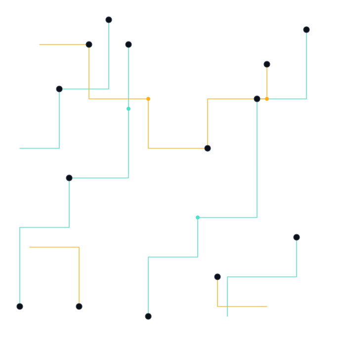
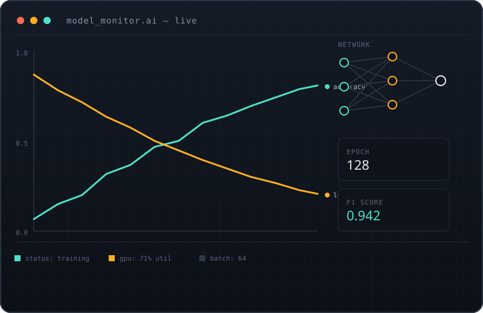

Realtime Model-Monitoring Dashboard
2025An internal console that streams accuracy, loss, and GPU utilization from training jobs in real time, so a stalled run gets caught in minutes instead of at the next morning's stand-up.
Ask me about it
AI Engineer, building the intelligence layer behind real products.
I design and ship applied machine-learning systems end to end: data pipelines, model training, evaluation, and the interfaces people actually use to work with them. This page doubles as my HTML5 fundamentals lab: semantic structure, a data table, and a working contact form, all in one build.
A quick read on how I work, and the tools I reach for most.
I got into engineering through the unglamorous parts: cleaning datasets, debugging silent training runs, and writing the plumbing that gets a model from a notebook into something a real user can click on. That's still most of the job, and I like it that way.
Lately I've been focused on retrieval and evaluation: making systems that don't just produce an answer, but produce one that's checkable. Outside of model work, I care a lot about the last mile (the UI, the docs, the onboarding) because that's what "shipped" actually means to a user.
A few projects that show how I like to work: instrumented, evaluated, and built to be handed off.

An internal console that streams accuracy, loss, and GPU utilization from training jobs in real time, so a stalled run gets caught in minutes instead of at the next morning's stand-up.
Ask me about itA repeatable scoring pipeline for a retrieval-augmented pipeline: grades answers for faithfulness against source documents and flags regressions before they reach a release branch.
Ask me about itA lightweight packaging tool that quantizes and exports vision models for on-device inference, cutting a typical deployment from a multi-day effort to a single command.
Ask me about itFive languages that shaped how the tools on this page, and most of my day job, get built.
| Name | Year | Paradigm | Creator |
|---|---|---|---|
| Python | 1991 | Multi-paradigm: object-oriented, procedural, functional | Guido van Rossum |
| JavaScript | 1995 | Multi-paradigm: event-driven, functional, prototype-based OOP | Brendan Eich |
| Go | 2009 | Concurrent, imperative, structured | Robert Griesemer, Rob Pike & Ken Thompson |
| Rust | 2010 | Multi-paradigm: functional, imperative, memory-safe systems | Graydon Hoare |
| TypeScript | 2012 | Multi-paradigm: structurally typed superset of JavaScript | Anders Hejlsberg |
Have a role, a project, or a question about anything above? Send a transmission. I read every one.
Prefer email or a direct message? Reach me through any of these channels.